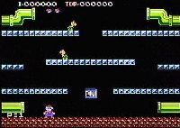

|


Review
Game Type: 2D Platform
Two players race around a screen full of enemies, leaping to knock into
the platforms above and stun the enemies overhead. Once an enemy is
stunned they must hurry to kick it over the edge or it will recover (and
it'll be really, really pissed off when it does). Clear a quota of enemies
to proceed to the next round.
Gameplay: 80/100
Donkey Kong meets Joust, or at least that's what Nintendo hoped to create
back in the 80's. They were moderately successful in capturing Joust's
cooperative/competitive two player aspects. Two players can either help each
other get as far in the game as possible, or use any number of dirty tricks
to kill off the other character. Beware if your friend decides to do the
latter. Players can stun each other by knocking into the platforms from below
or stomping on each others' heads. While that in itself isn't deadly you can
easily be knocked into a critter's path. Stunned critters can be revived by
knocking the platforms, and if you're trying to kick one off the screen when
your friend/opponent revives him... well, you get the idea. Unfortunately
the more competitive matches can be very brutal and very, very brief, leaving
one player to cool their heels while the other finishes their game. The two
player mode definitely has its imperfections. But skilled players may well
find it quite enjoyable.
Even with one player MB isn't half bad. Beware, though; your characters
have a fair amount of inertia, and if you don't like games where you skid
about the screen you won't like this. Most folks are already used to this
sort of control from Super Mario Bros., though. Unlike SMB, there's no huge
world to explore. There's just you and a screen full of snapping turtles.
But means there's nothing but pure arcade action, and that's the way it
should be.
Graphics: 80/100
Platforms, pipes, solid black background. That's all there is to the game
screen. Not much graphic detail, but less is sometimes more. This is the look
that the NES is ideally suited for. The colors and character graphics are
appealing, and there are one or two bits of excellent animation. My only
complaint in the graphic department is the constant, subtle flicker on all
the enemy sprites.
Sound: 90/100
No music, just an excellent set of cute sound effects. But again, less is
sometimes more.
Overall: 80/100
My favorite type of game is one that takes a simple idea and
implements it really, really well. This is one of those games. I can't
guarantee you'll enjoy it in the long term with two players or even
with one, but it's a fun jaunt for a while at least.
|